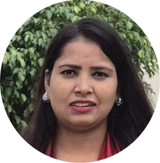
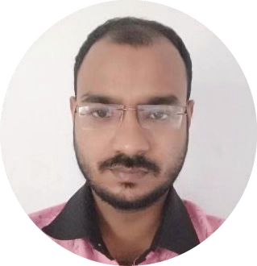
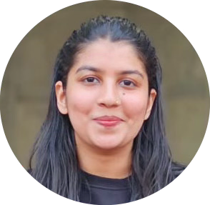

Ph.D.
Doctoral graduates
Home
Alumni
Ph.D. Graduates
Explore doctoral alumni who led thesis projects, advanced experimental methods, and expanded the lab's research directions at Vyoma Lab.
Ph.D. Graduate
Sudipto Behera
Sudipto Behera is a researcher at IIT Delhi in the Department of Textile and Fibre Engineering. His work focuses on aerogel-based insulation materials and their integration into textiles for cold weather and cryogenic applications. He is interested in developing efficient and scalable thermal insulation systems. His research combines materials science with textile engineering to address real-world challenges in extreme temperature conditions.
Ph.D. Graduate
Sujaan Kaushik
Sujaan Kaushik is a researcher at IIT Delhi in the Department of Textile and Fibre Engineering. His work focuses on biopolymeric aerogels for extreme cold weather textile systems. He is interested in developing sustainable and high-performance thermal insulation solutions. His research combines biomaterials science with aerogel technology to address real-world challenges in extreme temperature protection.
Ph.D. Graduate
Kumar Ghosh
Kumar Ghosh is a researcher at IIT Delhi in the Department of Textile and Fibre Engineering. His work focuses on silica aerogel and other additives integrated meltspun fibres. He is interested in developing next-generation functional fibres with enhanced thermal and mechanical properties. His research combines composite materials science with fibre processing to address real-world challenges in industrial and high-performance textiles.
Ph.D. Graduate
Sukirti Baliyan
Sukirti Baliyan is a researcher at IIT Delhi in the Department of Textile and Fibre Engineering. Her work focuses on aerogel-integrated nonwovens for extreme cold weather clothing. She is interested in developing ultralight and highly insulative textile structures for superior thermal protection. Her research combines nonwoven technology with material science to address real-world challenges in protective gear for harsh environments.
Ph.D. Graduate
Bhavesh Thakur
Bhavesh Thakur is a researcher at IIT Delhi in the Department of Textile and Fibre Engineering. His work focuses on electrospun breathable filtration media for advanced face masks. He is interested in developing highly efficient and breathable protective equipment to enhance personal safety. His research combines polymer science with advanced spinning techniques to address real-world challenges in environmental health and filtration.

Ph.D. Graduate
Reena Yadav
Reena Yadav is a researcher at IIT Delhi in the Department of Textile and Fibre Engineering. Her work focuses on the functionalization of p-aramid fibres for high-performance applications such as EMI shielding and energy storage. She is interested in enhancing the functional and mechanical properties of fibers using nanotechnology. Her research combines surface chemistry with material science to address real-world challenges in electronic textiles and high-strength materials.

Ph.D. Graduate
Mahafuj Ali
Mahafuj Ali is a researcher at IIT Delhi in the Department of Textile and Fibre Engineering. His work focuses on cooling textiles for advanced thermal management. He is interested in developing innovative solutions for thermoregulation in urban and extreme heat environments. His research combines heat transfer mechanics with textile design to address real-world challenges in climate adaptation and human comfort.

Ph.D. Graduate
Afeeha Parveen
Afeeha Parveen is a researcher at IIT Delhi in the Department of Textile and Fibre Engineering. Her work focuses on ceramic and PI-based aerogels for electronic applications. She is interested in pioneering lightweight, flexible materials with groundbreaking electro-thermal insulation properties. Her research combines ceramics science with polymer engineering to address real-world challenges in energy systems and fire-protective gear.